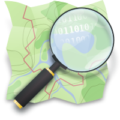

Vous avez peut-être déjà eu à afficher des cartes géographiques sur un de vos sites web ? Vous auriez bien aimé vous passer d’un service privateur comme Google Maps ? Et bien la réponse est ici, avec la bibliothèque OpenSource Leaflet et les fonds de cartes OpenStreetMap.
Si vous préférez les solutions Googlesques, n’hésitez pas à aller lire cet autre tuto sur l’API Google Maps.
Sommaire
Quelques mots sur Leaflet et OpenStreetMap
Commencons par voir ce que sont Leaflet et OpenStreetMap, afin que nous ayons un vocabulaire commun.
OpenStreetMap
OpenStreetMap (que j’abrégerais dorénavant OSM) est un fournisseur de fonds de carte 1 . C’est exactement le même métier que ce que font les grands du web comme Google Maps, Bing Maps ou encore des acteurs plus locaux, comme IGN .
OSM se distingue cependant de ces différents organismes par sa démarche. En effet, toutes les cartes sont construites de manière collaborative et sont placées sous licence libre. En 2013 on recensait plus d’un million de personnes ayant contribué à l’élaboration des cartes que ce soit en répertoriant des chemins lors de leur promenade ou en corrigeant/ajoutant des noms de rues et bâtiments, par exemple.
Tout comme Zeste de Savoir, OSM est géré par un organisme à but non lucratif.
Si vous voulez essayer, rendez-vous sur http://www.openstreetmap.org/

Quelques projets utilisant OSM
Parlons rapidement de quelques projets utilisant OSM
2
. Tout d’abord, on trouve bien entendu le site du même nom (la version
*.fr
parle de l’organisation, les versions
*.com
et
*.org
exposent quant à elles les cartes). Ce site vous permet d’explorer l’environnement et d’établir des itinéraires. Ensuite, de nombreux outils dédiés aux loisirs se servent aussi des cartes OSM, comme par exemple OpenSeaMap pour la navigation ou OpenCycleMap plutôt orienté cyclisme. Enfin, de véritables projets citoyens ont aussi vu le jour comme WheelMap qui recense les lieux étant considérés comme accessibles en fauteuil roulant.
Leaflet
OSM c’est bien, mais ce n’est pas forcément trivial à intégrer sur un site. Il faut en effet gérer le système de tuiles 3 pour afficher la carte et on ne peut pas vraiment interagir avec.
Afin de palier à cela, une bibliothèque javascript à vu le jour : Leaflet. Cette bibliothèque est open-source et permet pas mal de choses tout en étant customisable via un mécanisme de plugin.
Leaflet va donc se charger de faire le chargement des tuiles de la carte en fonction du lieu que l’utilisateur veut visualiser (et à quel niveau de zoom) mais aussi gérer des interactions comme l’affichage de marqueur, de zone, gérer les déplacements, etc.
Enfin, il est bon de noter que Leaflet est indépendant du fournisseur de cartes. En effet, la bibliothèque peut tout à fait fonctionner avec OSM mais aussi Google Maps ou d’autres organismes (mais selon le cas il faudra alors fournir des clés d’accès aux cartes).

Notre première carte
Commençons sans plus attendre par afficher une carte avec Leaflet et OSM.
La structure de base
Pour cela, la première étape sera d’ajouter la bibliothèque Leaflet dans votre page web en y ajoutant la balise suivante :
<script src="http://cdn.leafletjs.com/leaflet/v0.7.7/leaflet.js"></script>
Il faudra aussi ajouter un peu de CSS spécifique via la balise
<link>
suivante à mettre dans le
<head>
de votre page :
<link rel="stylesheet" href="http://cdn.leafletjs.com/leaflet/v0.7.7/leaflet.css" />
Vous avez sûrement remarqué qu’un numéro de version est présent dans le lien. Je vous invite à vérifier que vous utilisez bien la dernière version de Leaflet en allant sur leur page "Downloads" .
Une fois que ces deux éléments sont prêts, il ne reste plus qu’à rajouter une balise
<div>
dans votre page. Cette dernière servira évidemment à accueillir la carte. Afin de la retrouver facilement, on lui donne un
id
reconnaissable comme
#macarte
.
<div id="macarte"></div>
Si vous avez bien tout suivi, vous obtenez un squelette ressemblant au suivant :
<!DOCTYPE html>
<html lang="fr">
<head>
<!--
Inclusion de la bibliothèque Leaflet et sa feuille de style.
L'include du js pourrait aussi être fait à la fin du <body>
-->
<link rel="stylesheet" href="http://cdn.leafletjs.com/leaflet/v0.7.7/leaflet.css" />
<script src="http://cdn.leafletjs.com/leaflet/v0.7.7/leaflet.js"></script>
<!-- Une feuille de style éventuelle -->
<link rel="stylesheet" href="style.css">
<title>Tutoriel Leaflet OSM</title>
</head>
<body>
<!-- Le conteneur de notre carte (avec une contrainte CSS pour la taille) -->
<div id="macarte" style="width:545px; height:490px"></div>
</body>
</html>
Bon, c’est pas mal, mais ça n’affiche rien ! Passons à la vitesse supérieure.
Afficher la carte
Maintenant que tout est prêt, on va enfin pouvoir afficher des données, et observer notre première carte s’afficher.
Pour cela, on va rajouter un bloc script à la fin de notre page, avant la balise
</body>
. Ce morceau de script va se charger de faire le lien entre la balise
<div id="macarte">
créée plus tôt et le javascript qui effectue nos actions.
On commence donc par créer une variable
carte
qui va contenir un objet
map
de la bibliothèque Leaflet.
var carte = L.map('macarte').setView([46.3630104, 2.9846608], 6);
Vous aurez remarqué que pour s’initialiser cet objet à besoin de connaitre l'
id
du div qui contiendra la carte. J’en ai aussi profité pour centrer la carte sur la France pour avoir un point de départ autre que (0,0) (le dernier élément est le zoom).
Maintenant qu’on a un moteur de carte de prêt, on va lui rajouter un fond de carte OSM.
L.tileLayer('http://{s}.tile.osm.org/{z}/{x}/{y}.png', {
attribution: '© <a href="http://osm.org/copyright">OpenStreetMap</a> contributors'
}).addTo(carte);
Que voit-on ici ? En fait c’est assez simple. La première partie désigne le fournisseur de cartes et place des marqueurs de templates dans son adresse. Ensuite, on ajoute ce fournisseur de carte à notre variable carte créée juste avant. Et c’est tout !
Sans rentrer dans les détails, les marqueurs de template servent à décrire quel est le format de l’adresse à utiliser pour charger une tuile particulière. Ainsi, les infos
z
,
x
,
y
servent à décrire respectivement le niveau de zoom voulu ainsi que par exemple, la position en x et y voulue.
Voici ce que vous devez maintenant obtenir :
(Les plus observateurs auront remarqué que j’ai mis une adresse différente pour le chargement des ressources. Cela est du au chargement http s qui n’est pas bien supporté par le CDN original de Leaflet.)
Rajoutons de l’informations
Afficher une carte c’est sympa, mais c’est pas transcendant ! Pouvoir afficher de l’informations par dessus ce serait quand même plus sympa ! Voyons comment faire…
Des marqueurs
Le B-A-BA de la cartographie est bien souvent de savoir placer un marqueur sur une carte pour indiquer une position. Ne grillons pas les étapes et apprenons déjà à faire cela…
Un marqueur ( marker ) est défini par une position en latitude et en longitude. Pour l’exemple je vous propose d’en placer un sur le nombril du monde, se situant aux coordonnées [46.6835956, -0.4137665].
Pour placer un marqueur, on va donc commencer par créer une variable de type
marker
en lui donnant des coordonnées.
var marker = L.marker([46.6835956, -0.4137665]);
Ensuite c’est très simple, il faut juste lui dire de s’ajouter sur notre carte !
marker.addTo(carte);
Et si on est radin sur le nombre de caractères, on fait tout en une seule fois :
var marker = L.marker([46.6835956, -0.4137665]).addTo(carte);
Et voilà le résultat !
Ça a tout de suite bien plus d’allure !
Des lignes
Une autre indication sympathique peut-être le dessin de forme sur une carte. Par exemple, on pourrait avoir envie de dessiner la lettre E de Eskimon sur le nombril du monde.
Pour dessiner un chemin, on va créer un
Polyline
. Un
Polyline
va avoir besoin d’une succession de position à relier puis d'
options
comme sa couleur, son opacité, sa largeur…
On va donc faire un chemin qui relie les coordonnés suivantes :
| Coordonnées # | Latitude | Longitude |
|---|---|---|
| 1 | 47.077766 | -0.219043 |
| 2 | 47.077766 | -0.643656 |
| 3 | 46.912911 | -0.643656 |
| 4 | 46.912911 | -0.219043 |
| 5 | 46.912911 | -0.643656 |
| 6 | 46.778871 | -0.643656 |
| 7 | 46.778871 | -0.219043 |
Maintenant que l’on a nos positions pour décrire le polygone, on va le dessiner !
var eskimon = L.polyline([
[47.077766, -0.219043],
[47.077766, -0.643656],
[46.912911, -0.643656],
[46.912911, -0.219043],
[46.912911, -0.643656],
[46.778871, -0.643656],
[46.778871, -0.219043]
], {color: 'red'}).addTo(carte);
Des formes
Les lignes sont maîtrisées ? Passons maintenant aux formes ! Vous allez voir c’est finalement assez simple une fois qu’on a compris le principe.
Un cercle
Dessinons le cercle d’influence du nombril du monde… Pour cela, on va le représenter par un cercle. Un cercle en anglais c’est un circle , et il est représenté en mathématiques par un centre et un rayon. On aura donc besoin de deux infos, le centre qui sera un couple de coordonnées latitude/longitude et le rayon en mètres. On va donc dessiner un cercle de centre le nombril du monde aux coordonnées [46.6835956, -0.4137665] et de diamètre 420km, ce qui fait un rayon de 210000 mètres.
var influence = L.circle([46.6835956, -0.4137665], 210000).addTo(carte);
Comme vous le voyez, par défaut le cercle est de couleur bleu semi-opaque avec un bord bleu foncé. Comme pour les polylines ci-dessous, cela peut-être changé via des options.
var influence = L.circle([46.6835956, -0.4137665], 210000, {
'color': '#FF7F00',
'fill': true,
'fillColor': '#FFFF00',
'fillOpacity': 0.2,
}).addTo(carte);
Je vous laisse essayer et vous référer à la
page de documentation
pour tester les options.

Un polygone
Et si la zone d’influence était en fait non pas un cercle mais plutôt un hexagone ? Et bien rien de plus simple, un polygone ce n’est rien de plus qu’un polyline fermé dont on pourra colorier l’intérieur.
Sans plus attendre, voici un ensemble de coordonnées. Je vous laisse comme exercice le soin d’obtenir le résultat suivant :
| Coordonnées # | Latitude | Longitude |
|---|---|---|
| 1 | 47.318398 | -0.886464 |
| 2 | 47.318398 | 0.069346 |
| 3 | 46.722971 | 0.5862335 |
| 4 | 46.000000 | 0.069346 |
| 5 | 46.000000 | -0.886464 |
| 6 | 46.722971 | -1.4137665 |
Et comment je supprime une forme ?
Rien de plus simple, il suffit d’appeler la méthode
removeLayer
de votre carte et de lui donner le marqueur (ou autre élément) à supprimer.
carte.removeLayer(marker);
Un peu plus d’interactivité
Les cartes s’affichent et on peut déjà transmettre des informations à l’utilisateur via l’affichage. Passons dès à présent à l’étape suivante qui nous permettra d’augmenter les interactions via la gestion des clics et autres drag’n drop .
Exemple simple, le clic
Le clic. L’élément d’interaction élémentaire de la navigation sur internet. Rajoutons le à notre carte !
C’est d’ailleurs assez simple. Les grands habitués du javascript ne vont pas disparaître. En effet, il s’agit ici d’ajouter une fonction à appeler lors du déclenchement de l’événement. Cela se fera via la méthode
on
à laquelle on passera le nom de l’événement (
click
) puis la fonction à appeler au déclenchement.
Par exemple, pour appeler une fonction "placerMarqueur" on fera :
carte.on('click', placerMarqueur);
function placerMarqueur(e) {
// Faire quelque chose suite à l’événement
}
Vous remarquerez que la fonction appelée par le clic possède un paramètre
e
. Ce dernier porte des infos sur l’événement, comme le lieu géographique du clic par exemple.
Voici un exemple un peu plus complet qui déplacera le marqueur à la position du clic.
var carte = L.map('macarte').setView([46.5630104, 1.4846608], 6);
L.tileLayer('http://{s}.tile.osm.org/{z}/{x}/{y}.png', {
attribution: '© <a href="http://osm.org/copyright">OpenStreetMap</a> contributors'
}).addTo(carte);
var marker = L.marker([46.6835956, -0.4137665]).addTo(carte);
carte.on('click', placerMarqueur);
function placerMarqueur(e) {
marker.setLatLng(e.latlng);
};
Toujours plus d’infos, la popup
Maintenant que l’on déplace des marqueurs, on pourrait aussi s’amuser à rajouter une petite couche d’informations via une petite infobulle . Cette infobulle pourra être peuplé de plein d’informations qui vous semblent pertinentes. Pour garder les choses simples, affichons la coordonnée au dessus du marqueur quand celui-ci va se déplacer…
L’infobulle de Leaflet s’appelle "popup". Rassurez-vous, elle est bien moins envahissante que celle que les publicitaires aiment nous afficher !
Pour attacher une popup à élément (comme un marqueur), on utilise la fonction
bindPopup
que l’on peut éventuellement tout de suite personnaliser avec un texte (qui peut-être mis en forme avec des balises html). On peut ensuite récupérer cette popup pour la manipuler via la méthode
getPopup
.
var marker = L.marker([46.6835956, -0.4137665]).addTo(carte);
marker.bindPopup(''); // Je ne mets pas de texte par défaut
var mapopup = marker.getPopup();
Mais ça ne s’affiche pas

Et non ! Il ne reste juste une petite méthode à faire pour cela, appeler la fonction
openPopup
du
marqueur
(ou de l’objet à laquelle vous l’avez attachée).
mapopup.setContent('Salut, ça zeste ?'); // je personnalise un peu avant d'afficher
marker.openPopup();
Glisser et déposer
Dernière étape pour ajouter de l’interaction, apprenons à maîtriser le glisser-déposer sur la carte pour déplacer un marqueur. En anglais on parle de draggable , c’est donc sous ce terme qu’on le trouvera dans la doc .
Et on attaque par une question : vous rappelez-vous qu’on a parlé "d’options" un peu plus tôt dans ce tuto ? J’espère, car c’est par ce biais que l’on va rendre un marqueur déplaçable ! En effet, il suffit simplement de rajouter l’option
draggable
à
true
pour que notre marqueur devienne déplaçable à la souris. Une fois cela fait, il pourra générer entre autres deux nouveaux événements intéressants :
dragstart
et
dragend
.
Sans plus attendre, appliquons cela à un exemple, l’affichage des coordonnées où sera déposé le marqueur :
// Notez bien l'apparition de l'option draggable
var marker = L.marker([46.6835956, -0.4137665], {draggable:'true'}).bindPopup("").addTo(carte);
marker.on('dragend', relachement);
function relachement(e) {
marker.getPopup().setContent(''+marker.getLatLng());
marker.openPopup();
}
Bien entendu, ce ne sont pas là les seules actions possibles sur les objets ou sur la carte. La documentation vous tend les bras si vous voulez en savoir plus !
[TP] Calculateur de distances
Pour ce petit exercice, on se propose de faire un calculateur de distances. Ce calculateur devra être en mesure d’afficher la distance entre deux marqueurs et de tracer un joli segment entre les deux. Chaque marqueur doit pouvoir être déplacé et lorsque le déplacement se termine, une popup doit apparaître sur le marqueur déplacé pour afficher la distance entre les deux.
Pour avoir un aperçu du résultat, rendez vous ci-dessous dans la rubrique correction.
Indices
Il y a pas mal de choses que l’on a pas vu encore, mais tout est dit dans la documentation en allant chercher les bons mots-clés.
Indice #1 : Comment calculer une distance ?
En allant voir la méthode distanceTo
Indice #2 : J’ai déplacé un marqueur, comment je le récupère dans l’événement ?
Les fonctions qui réceptionnent les événements possèdent un argument (que l’on note souvent
e
). Ce dernier possède un champ
target
qui est l’objet déclencheur de l’événement.
Correction
Avant de regarder le code, essayez quand même par vous-même
Amélioration
Pour les plus courageux d’entre vous, voici quelques idées d’améliorations pour faire un calculateur de distance du tonnerre !
-
Première amélioration, réussir à placer plusieurs marqueurs lors d’un clic. À chaque clic, un marqueur se rajoute et le chemin s’étend jusqu’à ce nouveau marqueur. On affiche alors la distance totale sur ce nouveau marqueur (somme de tout les tronçons). Bien entendu la distance doit se recalculer lors du déplacement d’un marqueur.
-
Ensuite, il serait sympa d’afficher une popup par dessus les marqueurs, pour avoir les distances intermédiaires (en gros le point A n’affiche rien, le B affiche la distance de [AB], le C affiche [AB]+[BC] puis le D affiche la somme de tout, [AB]+[BC]+[CD]). Comme je suis sympa, je vous laisse choisir entre afficher les distances intermédiaires soit au clic sur le marqueur, soit à son survol.
-
Enfin, petit comble du confort, un double clic sur un point le supprime (et comme on veut une belle application, les distances doivent se recalculer proprement et le dessin du chemin aussi).
Bon courage !
Partage
Afin de partager vos résultats, questions, performances et autres prouesses codesques, je vous invite à aller sur ce sujet du forum qui servira à animer cet atelier (plutôt que la zone de commentaires).
Le mécanisme des plugins
On l’a vu, le combo Leafet+OSM de base permet déjà de faire un paquet de choses. Mais grâce à son système de plugins, Leaflet peut proposer encore bien plus, proposant des outils pour afficher de nouveaux fond de cartes ou encore de nouveaux marqueurs et autres indicateurs visuels. Tout comme la bibliothèque Leaflet, les plugins sont opensources. Ils sont tous recensés sur la page " Plugins " du site original et regroupés par catégories de fonctions (fonds de cartes, affichages, interactions…).
Exemple, MarkerCluster
À titre d’exemple, je vous propose d’intégrer l’incontournable plugin MarkerCluster qui propose de regrouper les marqueurs géographiquements proches lorsque vous [dé]zoomer sur la carte ( démo ).
Installation
Bon, pas de chance, en général l’étape d’installation est la plus pénible. Certains plugins passent par des outils comme npm, d’autres un simple lien à lier après téléchargement de la librairie minifiée.
MarkerCluset fait partie de la catégorie "installation via Bower". Cependant, en cherchant un peu on peut facilement trouver un CDN le fournissant :
<link rel="stylesheet" href="http://cdn.leafletjs.com/leaflet/v0.7.7/leaflet.css" />
<link rel="stylesheet" type="text/css" href="http://cdnjs.cloudflare.com/ajax/libs/leaflet.markercluster/0.4.0/MarkerCluster.css" />
<link rel="stylesheet" type="text/css" href="http://cdnjs.cloudflare.com/ajax/libs/leaflet.markercluster/0.4.0/MarkerCluster.Default.css" />
<script src="http://cdn.leafletjs.com/leaflet/v0.7.7/leaflet.js"></script>
<script src='http://cdnjs.cloudflare.com/ajax/libs/leaflet.markercluster/0.4.0/leaflet.markercluster.js'></script>
Un petit rajout dans notre
<head>
et c’est parti !
Utilisation
Maintenant, pour l’utilisation c’est comme pour tout plugin de tout logiciel, on lit la doc et on démarre avec un exemple !
On découvre alors que ce plugin est tout simple puisqu’il suffit simplement d’ajouter un
markerClusterGroup
à notre carte puis ajouter des marqueurs classiques à ce dernier (et comme d’habitude on peut spécifier un tas d’options pour chaque chose à chaque fois
).
Voyez plutôt :
Ce tutoriel touche à sa fin, j’espère qu’il vous aura plu. Vous en savez maintenant suffisamment pour voler de vos propres ailes et dessiner des cartes à tout va avec Leaflet et OSM. Sachez cependant que nous avons juste écorché la surface, plein de choses peuvent être faites avec cette bibliothèque vraiment sympa. Une liste de tutoriels officiels existe ainsi que bien entendu une documentation .
N’oubliez pas aussi que tout ce que vous avez vu ici est opensource. Si c’est un sujet qui vous passionne et que le javascript est votre ami, le github de Leaflet vous tend les bras. OpenStreetMap aussi accueille toutes les contributions, alors n’hésitez pas à rendre tout ces projets encore meilleurs !
Et enfin, merci aux Beta Zesteurs pour leur relectures et Emeric pour sa validation et corrections faites pour l’amour du Zeste !
-
Un fond de carte est une représentation planaire graphique d’un environnement géographique. Bref, c’est une carte qui n’affiche pas forcément des routes ou des reliefs.
↩ - ↩
-
On ne charge jamais une carte en entier, cela demanderait bien trop d’informations et générait un trafic trop important. À la place, on charge la carte "par morceau" de plusieurs [k]m² concernant uniquement la zone à visualiser.
↩